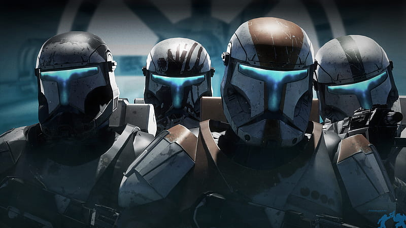

Pendant la guerre des clones, Delta Squad était composée d'une équipe de quatre commandos clones - le chef d'unité Clone Sergeant RC-1138 "Boss", le commandant en second RC-1140 "Hacker", RC-1207 "Sev" et RC-1262 "Nitro" - qui a servi dans la Grande Armée de la République. À un moment donné, Delta Squad a été déployé à partir d'un vaisseau de combat LAAT / i dans une zone de combat afin de prendre le contrôle du territoire. À la suite du massacre sur la planète Devaron , Delta Squad a récupéré les corps du Général Jedi Halsey et de son Padawan, Knox et les a ramenés au Temple Jedi sur Coruscant, la capitale mondiale de la République Galactique.
Boss relevait directement de plusieurs membres du Haut Conseil Jedi - Obi-Wan Kenobi, Plo Koon, Adi Gallia et Saesee Tiin - et les informa que toute la force militaire sur Devaron avait péri avec Halsey et son apprenti, conduisant le Conseil à soupçonner l'émergence d'une nouvelle menace pour l'Ordre Jedi. Leurs soupçons ont été confirmés lors de la récupération des images de sécurité de la bataille; un hologramme de la mort de Halsey a révélé que son assassin était un frère de la nuit de Dathomir, que les Jedi connaîtraient sous le nom de Savage Opress.

RC-1138, surnommé Boss ou encore Trois Huit, était un commando clone et le chef de l'escouade Delta. Il était un excellent guerrier et avait le sens de la coopération. Il était facile à reconnaître grâce à son armure peinte en orange. Ses coéquipiers étaient : Nitro (Delta RC-1262), Hacker (Delta RC-1140) et Sev (Delta RC-1207).
RC-1140 (surnommé Fixer) était un commando clone de la Grande Armée de la République. Il faisait partie de l'escouade Delta en tant qu'expert en technologie. Il était facilement reconnaissable avec son armure peinte en vert.
RC-1262, surnommé Scorch, était un commando clone de la Grande Armée de la République. Il faisait partie de l'escouade Delta en tant qu'expert en démolition et en explosifs. Il était facilement reconnaissable avec son armure peinte en gris et en jaune. Nitro avait un très grand sens de l'humour et disait souvent des plaisanteries à ses coéquipiers durant leurs missions.
RC-1207 (surnommé Sev) était un commando clone et un membre l'escouade Delta. Il était un maître au Sniper, mais possédait un humour noir qui ne plaisait pas à tout le monde. Son armure était peinte en rouge à certains endroits ce qui rappelait la couleur du sang. Sur son casque, la peinture forme l'emprunte d'une main ensanglantée. Sev fut porté disparu durant une mission sur la planète Kashyyyk.